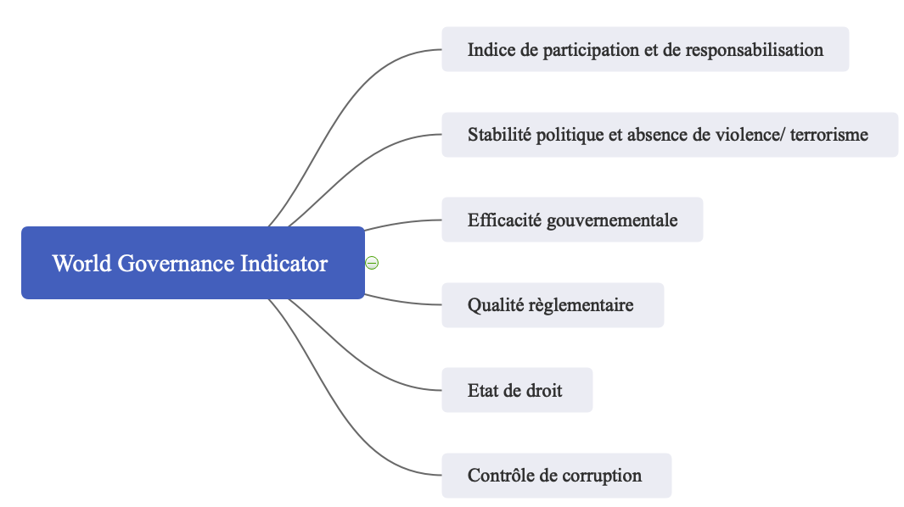

Par Marie Gibaudan, le 10/01/2021
Through this study, we are going to see who governance is influenced by the political regime, the religion(s) and the conflicts. Via the meeting of data the countries' tendancies will be highlited on different time lapses. The idea of governance can be interpreted in different way, here the question will be treated according to a definition that merges all the thematics above.
A travers cette étude nous allons voir comment la gouvernance est influencée par le régime politique ou la fragmentation. Via le croisement de données les tendances des pays vont etre mis en lumière sur differents laps de temps. L'idée meme de gouvernance peut etre interprétée de differentes manières, ici la question sera traitée selon une definition qui comprend l'ensemble des thématiques evoquées
F
R
A
N
Ç
A
I
S
E
N
G
L
I
S
H
La gouvernance représente la manière de gouverner d'une institution et sa relation avec les gouvernés. L'echelle à laquelle nous etudierons la question est nationale, elle correspond donc a la relation gouvernement et citoyens. Cette relation gouverneur-gouvernés et son contraire est interressante à étudier, elle permet d'avoir une vision globale de l'état du pays. Cette notion est assez modulable, on peut l'aborder de diverse manière. Ici on étudiera dans un premier temps les régimes politiques, les fragmentation et les droits fondamentaux puis la liberté : des citoyens, de la presse ainsi que la présence de l'état en question sur le territoire (service public). L'idée est d'identifier la relation entre tous ces éléments et la gouvernance.
"La manière dont le pouvoir est exercé dans la gestion des ressources économiques et sociales d’un pays pour le développement" World Bank in 1992
" Règles, mécanismes d’application et organisations" World Bank's 2002
"Les traditions et les institutions par lesquelles l’autorité dans un pays est exercée. (…)" World Bank 2010
Ma démarche a été la suivante : qu’est ce qui conditionne la gouvernance? Tout d’abord c’est selon moi le régime politique en vigueur sur le pays. Un régime autoritaire ne permet pas les memes choses qu’un régime démocratique. Simplement au niveau de la participation citoyenne ces deux régimes s’opposent complètement. Dans un premier temps nous verrons donc les différentes typologies de régime politique. Il a ensuite la fragmentation du pays en question selon plusieurs critères : les langues, les ethnies et les religions. L’absence d’unicité dans un pays peut representer une liberté de choix pour les citoyens mais peut aussi être source de conflits entre les differents groupes. C’est pourquoi nous nous concentrerons également sur les conflits dans les pays qui sont un facteurs très importants d’instabilité. Dans un second temps nous analyserons le degré de liberté des citoyens selon plusieurs critères ainsi que leurs accès à des services dits de base.
Selon World Bank, l'indice de gouvernance est calculé selon plusieurs sous indices représentés dans la carte mentale ci-dessous. Chaque est indice est lui meme composé de differents types de données.
Pour avoir une idée générale de la gouvernance dans le monde voici une carte présentant le WGI (World Governance Index) puis le detail des sous indices en cliquant sur le pays souhaité.
L’indice va de -2,5, le plus bas à 2,5 (meilleure gouvernance). Il a été calculé pour 200 pays à travers le monde de 1996 à 2019. Son calcul est simple : c’est un calcul de moyenne pour chaque groupe de données. Pour calculer l’indice global il faut réaliser une moyenne des 6 sous indices qui le compose, le système est le meme pour calculer les sous indices. Ces données sont intéressantes car elles permettent de rendre des informations intelligibles. Elles résultent cependant d’une simplification, on sait que la Libye a un score de -2,5 en stabilité politique pour 2019 mais nous ne connaissons pas les raisons de ce score.
Comme on peut le voir sur la carte ls pays concernés par une "mauvaise" gouvernance se trouve principalement en Afrique, pourquoi?
created with
Website Builder Software .